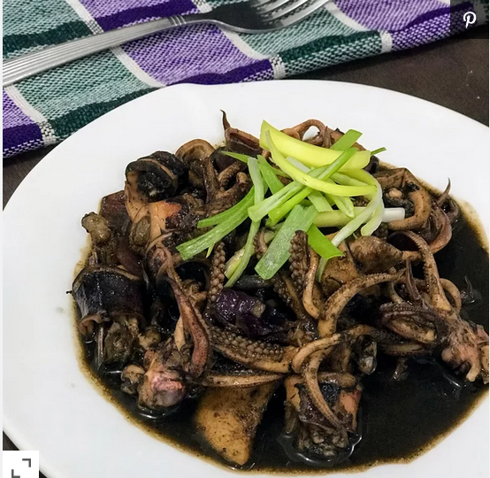

Adobong Pusit

This Filipino squid recipe tastes best if you use fresh, smaller squid. Squid is simmered with onion, garlic, tomato, vinegar, and soy sauce for a tasty meal.
Ingredients
- 2 ¼ pounds squid, cleaned
- ½ cup white vinegar
- ½ cup water
- salt and ground black pepper to taste
- 2 tablespoons olive oil
- 1 small onion, minced
- 2 cloves garlic, minced
- 1 tomato, chopped
- 1 tablespoon soy sauce
Step by step process of making Adobong Pusit
- Combine the squid, vinegar, and water in a small pot over medium heat; season with salt and pepper. Cook for 10 minutes.
- Meanwhile, heat the olive oil in a saucepan over medium heat; cook and stir the onion and garlic in the hot oil until softened, 5 to 7 minutes. Stir the tomato and soy sauce into the mixture. Pour the squid mixture into the saucepan and bring to a simmer; cook together another 20 minutes.